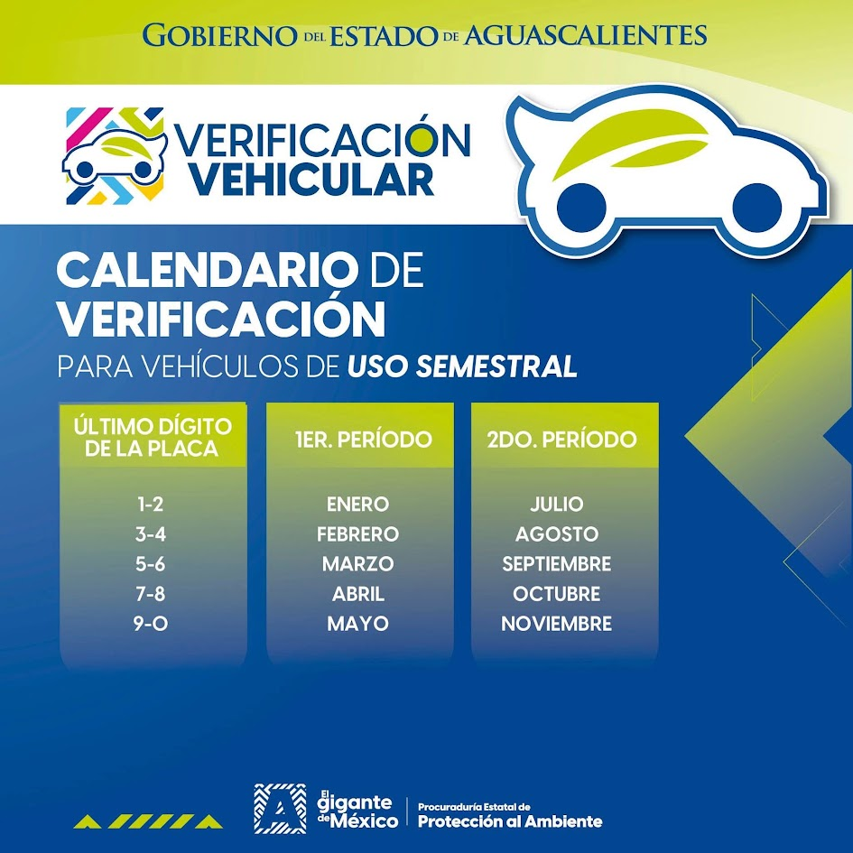
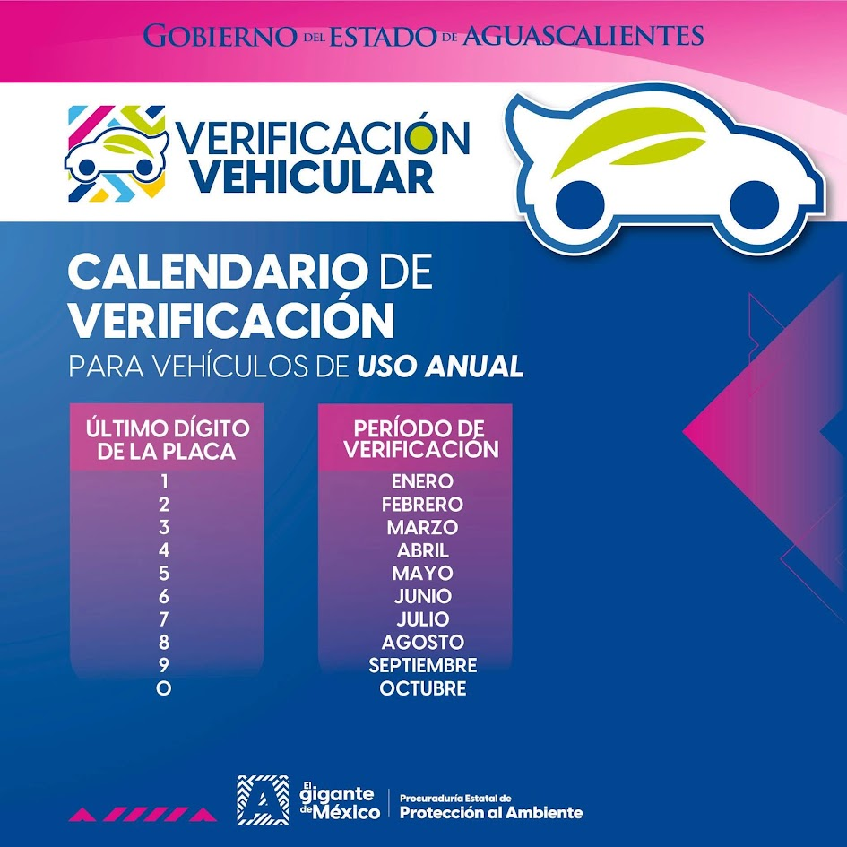
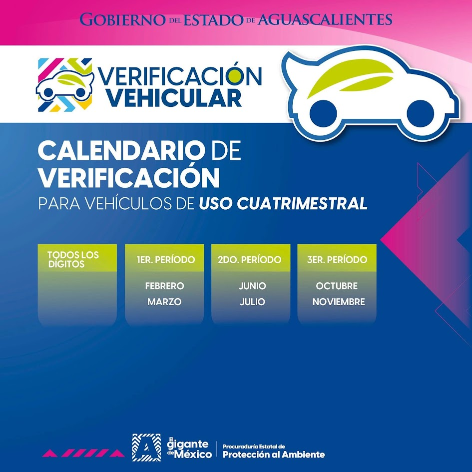
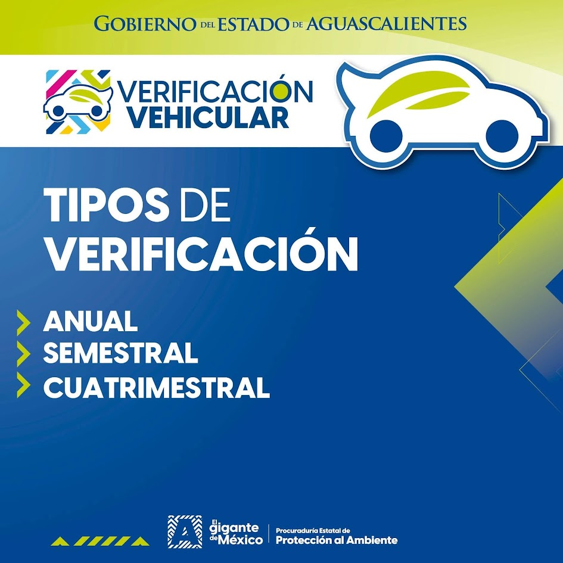

Te ayudamos a cumplir con tu verificación vehicular y trámites relacionados, con atención clara y tiempos de respuesta cortos.
ContáctanosSomos un centro de verificación vehicular ubicado en Aguascalientes, dedicado a ofrecer un servicio ágil, transparente y apegado a la normatividad vigente. Contamos con personal capacitado y procesos internos de control que nos permiten dar seguimiento puntual a cada registro, folio y trámite que manejamos para nuestros clientes.
Contamos con acreditación ante la SSMAA para verificar los 3 tipos de combustible, cada uno distinto entre sí.
Acreditados en las normas NOM-045 y NOM-167-SEMARNAT-2017 para emisiones contaminantes, y NOM-068-SCT-2-2014 para verificación físico-mecánica de autotransporte.
Control y seguimiento de multas y trámites pendientes hasta su resolución completa.
Resolvemos dudas sobre el estatus de tu vehículo o trámite de forma directa y clara.
Damos servicio de verificación estatal a los 3 tipos de combustible:
El periodo en que debes verificar tu vehículo depende de la frecuencia asignada por el Gobierno del Estado de Aguascalientes y del último dígito de tu placa. Consulta aquí en qué meses te toca según tu caso.

Dos periodos al año según el último dígito de tu placa.

Un solo mes al año, asignado por el último dígito de tu placa.

Tres periodos al año, aplica para todos los dígitos de placa.

Resumen de los tres tipos: anual, semestral y cuatrimestral.